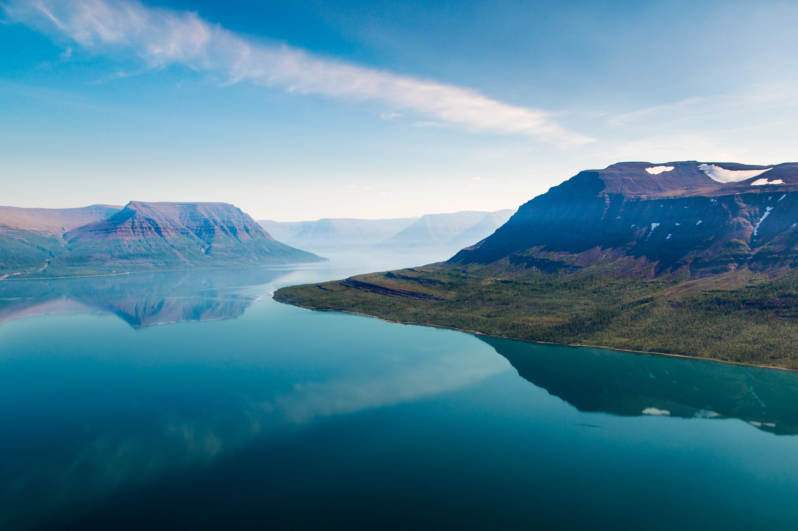
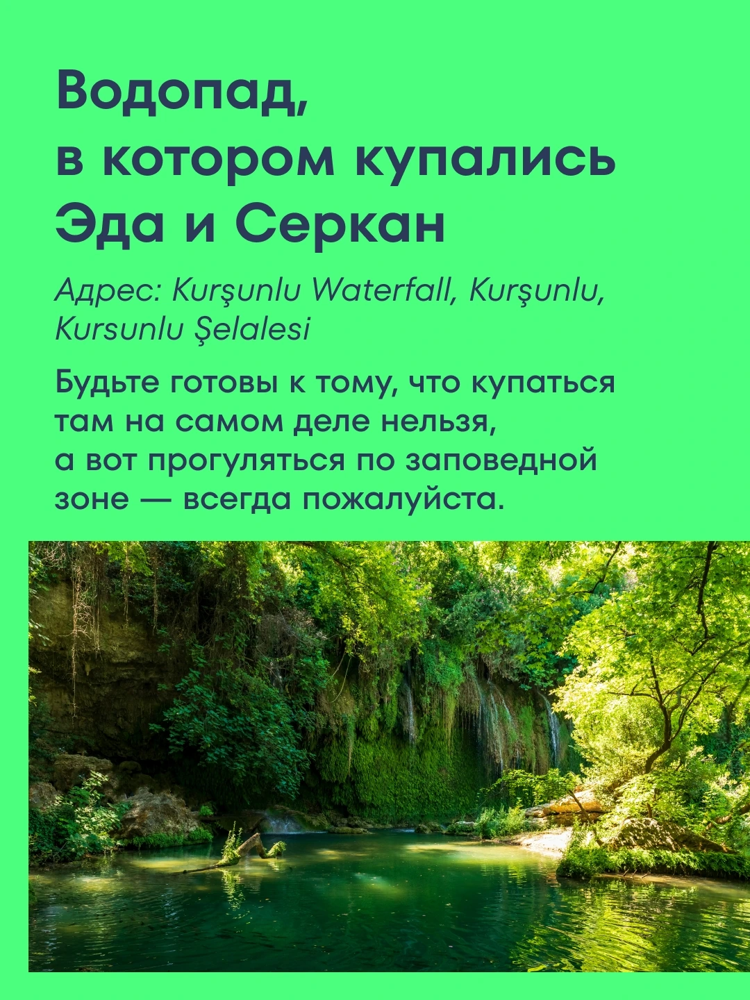
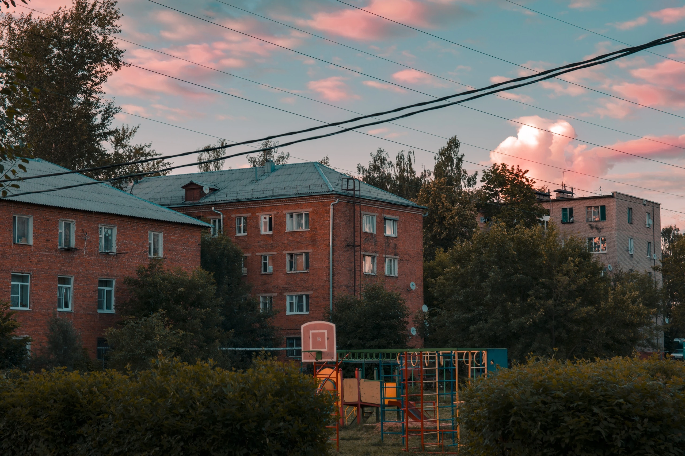

Color and Typography
I worked within Kupibilet’s existing visual identity, using its typeface and colors to keep the materials recognizable. The palette below comes from the designs shown here.
Coral · accent colorFrom the designs · ≈ #FE6240
Off-white · backgroundFrom the designs · ≈ #FEF7F2
Green · detailsFrom the designs · ≈ #4BFF7E
TT Fors
TT Fors is Kupibilet’s brand typeface. I kept the company’s type and colors throughout the work.

Routes
Dubai and Vladivostok
Places and Experiences
Travel roundups
Love Is in the Air
Card series




Photography
Lobnya